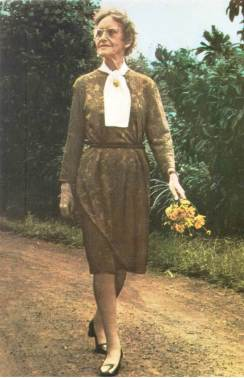

Quem foi Helena Antipoff?
Helena Antipoff nasceu em 1892, no então Império Russo, em uma região que atualmente pertence à Bielorrússia.
Foi psicóloga, pesquisadora e educadora e desenvolveu uma parte muito importante de sua carreira no Brasil.
Sua trajetória ficou marcada principalmente pela aproximação entre Psicologia e Educação, utilizando estudos sobre desenvolvimento humano para compreender melhor os estudantes.
Formação e chegada ao Brasil
Antes de chegar ao Brasil, Helena Antipoff estudou e trabalhou na Europa, onde teve contato com importantes pesquisas relacionadas à Psicologia e ao desenvolvimento infantil.
Em 1929, veio para o Brasil e passou a trabalhar em Minas Gerais.
Sua atuação envolveu principalmente formação de professores, pesquisas educacionais e estudos sobre as características dos estudantes.
Psicologia dentro da educação
Helena Antipoff acreditava que entender um estudante exigia observar muito mais do que suas notas escolares.
Era necessário considerar sua história, seu ambiente, suas experiências e suas características individuais.
Essa forma de pensar ajudou a fortalecer a relação entre Psicologia e Educação no Brasil.
O objetivo era utilizar conhecimentos científicos para compreender as dificuldades e capacidades dos alunos.
As diferenças entre os estudantes
Uma contribuição importante de Antipoff foi mostrar que os estudantes não poderiam ser avaliados de forma completamente igual.
Cada criança possuía experiências e condições de desenvolvimento diferentes.
Ela também destacou a influência do meio social e cultural na formação das crianças, mostrando que o desempenho escolar não poderia ser explicado apenas por características individuais.
Sociedade Pestalozzi
Em 1932, Helena Antipoff participou da criação da Sociedade Pestalozzi de Minas Gerais.
A instituição desenvolveu trabalhos educacionais e de assistência voltados especialmente para crianças que necessitavam de formas diferenciadas de acompanhamento.
Esse trabalho foi importante para o desenvolvimento de novas discussões sobre educação especial no Brasil.
Fazenda do Rosário
Outro projeto marcante de sua trajetória foi a Fazenda do Rosário, localizada em Minas Gerais.
O local tornou-se um espaço destinado ao desenvolvimento de experiências educacionais, formação de profissionais e atividades com crianças e jovens.
Ali, diferentes propostas de ensino puderam ser colocadas em prática e observadas.
Formação de professores
Helena Antipoff também considerava essencial melhorar a formação dos professores.
Para ela, conhecer conteúdos não era suficiente. Os educadores também precisavam compreender o desenvolvimento dos alunos, suas dificuldades e suas diferenças.
Por isso, parte de sua atuação foi dedicada à preparação de profissionais capazes de observar e compreender melhor seus estudantes.
Contribuições para a educação especial
O trabalho de Helena Antipoff teve grande importância para a história da educação especial brasileira.
Ela participou da criação de instituições e projetos voltados às crianças que precisavam de acompanhamento diferenciado.
Embora os conceitos e termos utilizados na educação tenham mudado bastante ao longo do tempo, sua atuação ajudou a fortalecer a ideia de que diferentes estudantes podem precisar de diferentes formas de apoio.
Relação com “Educação também é ciência”
Helena Antipoff é outro exemplo muito claro da união entre ciência e educação.
Ela utilizou conhecimentos da Psicologia, observações e pesquisas para estudar o comportamento e o desenvolvimento dos estudantes.
Em vez de tratar dificuldades escolares apenas como problemas do aluno, procurava compreender os diversos fatores que poderiam influenciar a aprendizagem.
Seu trabalho demonstra como a pesquisa científica pode ajudar a construir práticas educacionais mais adequadas.
O legado de Helena Antipoff
Helena Antipoff faleceu em 1974, deixando uma contribuição importante para a Psicologia, para a formação de professores e para a educação especial no Brasil.